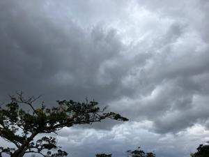
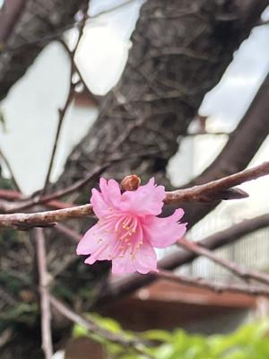

うるがいの話 ある日
最新: 三時に目覚める【うるがいの話 ある日】とは 一日だけのプログです
『うるがいの話』の最新一日だけのプログで、通信料が少なく経済的だ。カニの画像をクリックすると全ての日付が載る『うるがいの話』サイトを表示します
|
|
【うるがいの話】 うるがい(ｳﾙｶﾞｲ urugai)とは、『もずくがに』の名前でとても大きくなります。 |
|---|---|
|
|
【カミマヤーの話】 猫のことを方言でマヤーといいます。カミマヤー（kamimayaa）とは、神の猫のことです。 |
|
【たながぁの音楽】 たながぁ（ﾀﾅｶﾞｰ tanagaa）とは手長えびのことで、何種類かあり大きいのは車 エビぐらいになります。 |

|
【ぶながぁの話】 ぶながぁ(ﾌﾞﾅｶﾞｰ bunagaa)とは、赤い髪の毛、赤い身体、そして身長は１ｍ２０ｃｍ ぐらい、川の蟹を食べているの目撃された。場所は沖縄県国頭郡大宜味村のと ある村僕の隣近所に住んでいる爺さんから、聞いた話です。 |
|
|
【ギーマの話】 ギーマ(giima)とは、山原の里山に咲くスズランに似た、 花を付けます。実は食べられます、 気が付くと口の周りが紫になっています。 |
2024年01月25日 (木）三時に目覚める
14:46

たまに、三時頃に目覚てしまう。仕方なく、本を読む。『古武術・剣術がわか
る事典 これで歴史ドラマ・小説が楽しくなる!』牧 秀彦∥著、時代小説を読
みまくっているもの分からな単語が出てくるので、読んでみた。凄い、その筋
の人達は、知識だけでなく実際の古武道もたしなんでいるとの事。フムフム、
ピアノ弾けないが、楽譜ソフトで演奏を楽しんでいる人と大違いである。ちな
みに、近所のチネンジーサンは、真夜中でもピアノを弾くらしい、その朝はヨ
メはプンプン！、頭がおかしい、隣り近所は、耐えられるだろうか。耳栓した
らと、言うと怒られた。本は、３０分程度読んだあと速やかに眠りに入る。

国税庁から確定申告のメールが届き、パソコンでマイナーポータルのサイトに
入る。毎年だが、手続きの手順が変わっている、メールにより２段階認証、老
人達に出来るのだろうか。桜はジョギングの途中、写す。
１４時４０分 ビットコインの総資産 ￥１７、０９５（↓２５）